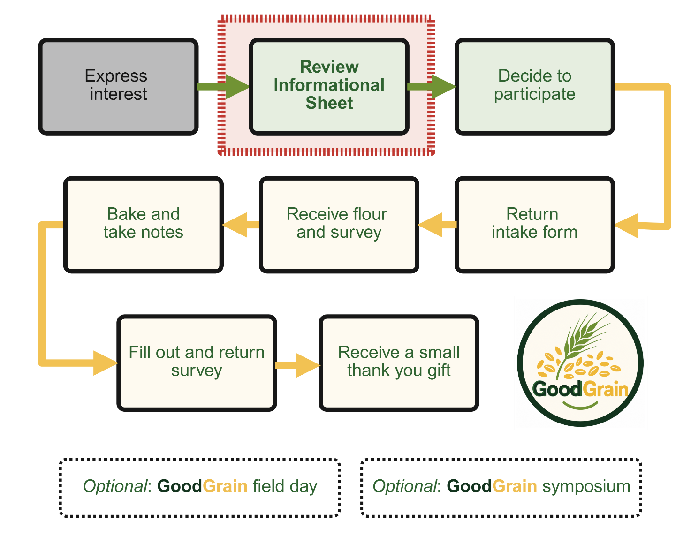
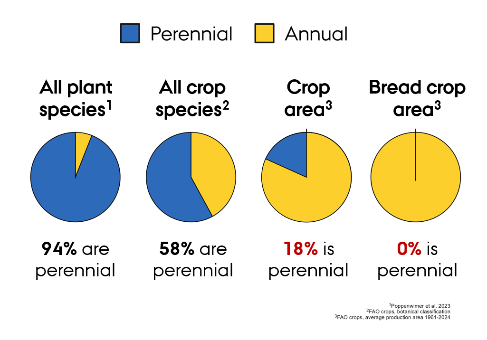
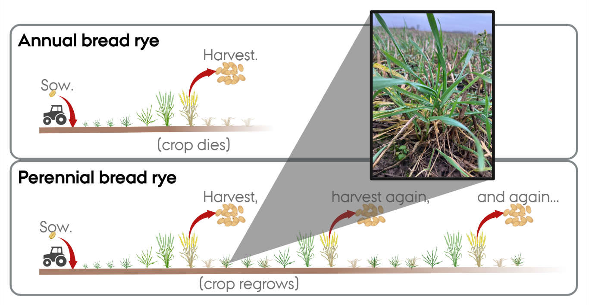

GoodGrain – hjemmebagningsevaluering
Informationsark
Introduktion
Hvis du modtager dette informationsark, har du vist interesse for at deltage i en hjemmebagningsevaluering af en ny rugbrødssort, der er flerårig i modsætning til de etårige rugbrødssorter, vi bruger i dag. Tak for din interesse! Formålet med dette ark er at give dig mere detaljeret information om den nye sort, så du kan beslutte, om du ønsker at deltage.

Hvad sker der nu?
- Se [informationsvideoen – link tilføjes] (på engelsk), og/eller læs dette informationsark eller [den danske version – link tilføjes].
- Når du har set videoen og/eller læst informationsarket, kan du, hvis du beslutter dig for at deltage i vores forskning, udfylde [tilmeldingsformularen – link tilføjes].
Informationsark
Oversigt over projektet
Som borgerforsker får du cirka 1 kg mel af flerårig rug til brødbagning. Du skal selv købe de øvrige ingredienser, du har brug for til bagningen. Vi beder dig om at tage noter undervejs i bagningen og bruge dem til at udfylde et opfølgende spørgeskema. Når du har udfyldt spørgeskemaet, får du en lille tak-for-hjælpen-gave (se figur 1).
I 2027 arrangerer projektet også en markdag, hvor du kan se den flerårige rug vokse. Om efteråret afholder vi et symposium, hvor vi deler den aktuelle viden om flerårig rug til brødbagning med alle led i værdikæden (forskere, forædlere, landmænd, møllere, bagere og brødspisere). Det er gratis og frivilligt at deltage i begge arrangementer.
Dette borgerforskningsprojekt er en del af et NNF Plant2Food-forskningsprojekt (bevilling nr. NNF22SA0081019), der gennemføres ved Institut for Agroøkologi og Institut for Fødevarer på Aarhus Universitet i Danmark i samarbejde med Meyers samt Wageningen University & Research i Nederlandene. Det er vigtigt for os at inddrage vores lokalsamfund i forskningen, så vi kan dele det, vi lærer, og samtidig lære af jer.
Mere baggrund og ressourcer for de nysgerrige
Overordnet kan planter inddeles i to kategorier: flerårige og etårige. Flerårige planter lever i mere end ét år, mens etårige planter ikke gør. Flerårige planter er meget almindelige i naturen. Tænk for eksempel på en park i dit nabolag: Der er måske træer, græs og nogle roser. Det er alt sammen flerårige planter. I køkkenhaven er mange planter derimod etårige, og dem skal man så eller plante igen hvert år – for eksempel radiser, salat og agurker. Dette generelle mønster med »flerårige planter i naturen, etårige planter i landbruget« ses faktisk på globalt plan. Selvom vi har mange gode flerårige afgrøder, er de afgrøder, vi bruger mest – og dyrker på det største areal – etårige.

Var det blot et tilfælde, at mennesker domesticerede etårige afgrøder til deres basale fødevarer? Eller er etårige planter simpelthen bedre end flerårige til fødevareproduktion? Disse spørgsmål diskuteres stadig. Uanset hvordan vi er nået hertil, synes der dog at være bred enighed om, at det på en eller anden måde ville være godt for miljøet at integrere flere flerårige planter i vores landbrugsarealer. Flerårige planter har ofte miljømæssige fordele: De bidrager til at lagre kulstof i jorden, holder jorden dækket året rundt og udnytter ressourcer som vand og kvælstof mere effektivt.
Samfundet har længe anerkendt de mulige fordele ved flerårige kornafgrøder. Der har været forsøg på at forædle flerårig hvede i Sovjetunionen siden 1930’erne! Tidligere var det en meget vanskelig opgave, især fordi forskerne havde få redskaber til at undersøge, hvad der foregik i planternes genetik. Trods udfordringerne havde nogle få laboratorier held med arbejdet, blandt andet et ved Universität Hohenheim i Tyskland. Her krydsede Dr. Reimann-Philips og hans team i 1960’erne med succes en etårig rug med en flerårig slægtning. Teamet afprøvede afkommet og udvalgte yderligere planter. Resultatet var en flerårig afgrøde (figur 3), som i 199X blev indsendt til vurdering som sort i Tyskland.

Men myndighederne mente ikke, at nogen ville være interesseret i at dyrke en sådan afgrøde, og arbejdet blev derfor lagt til side til fordel for undersøgelsen af nye og mere lovende muligheder. Forædlerne holdt nogle forsøgsparceller ved lige som et passioneret fritidsprojekt, men afgrøden har ikke fået fuld opmærksomhed i de seneste tredive år. I 2023 delte Dr. Thomas Miedaner, der overtog rugforædlingsprogrammet ved Universität Hhenheim efter Dr. Reimann-Philips’ død, frø fra denne oversete og glemte afgrøde med forskere ved Aarhus Universitet.
I 2025 afprøvede vi den side om side med en højtydende etårig rug. Vi var meget imponerede over, at den gav halvdelen af kornudbyttet fra den moderne etårige sort, når man tager i betragtning, at den blev krydset med sorter fra 1960’erne! Vi mener, at sorten fortjener videreudvikling, og denne bevilling er en del af indsatsen. Et af bevillingens mål er at undersøge, hvordan denne nye flerårige rug til brødbagning fungerer i hjemmekøkkener, og at høre, hvad folk synes om denne nye flerårige kornafgrøde.
Svar på nogle ofte stillede spørgsmål
Er denne flerårige rug til brødbagning genetisk modificeret ved hjælp af nye forædlingsteknologier?
Nej. Sorten er udviklet ved hjælp af traditionelle forædlingsmetoder, hvor planter krydses manuelt, og udvælgelsen baseres på deres fysiske egenskaber.
Er den sikker at spise?
Ja. Den Europæiske Union anerkender den som en fødevare, der er sikker at spise, på grund af dens genetiske baggrund og lighed med etårig rug. Kornet, der blev brugt til at fremstille melet, er desuden blevet testet af et uafhængigt laboratorium med henblik på kommerciel anvendelse. Testen omfattede blandt andet en analyse for mykotoksiner. Du kan finde laboratorieresultaterne [her – link tilføjes]. De bliver også sendt til dig sammen med melet.
Er denne rug økologisk?
Aarhus Universitet har ikke økologisk certificerede arealer, fordi certificeringen medfører omkostninger og yderligere administrativt arbejde. Denne rug blev dog dyrket uden brug af pesticider.
Kan jeg købe dette mel et sted?
Flerårig rug til brødbagning er endnu ikke tilgængelig på markedet, men det kan muligvis ændre sig i den nærmeste fremtid.
Hvor længe vil afgrøden fortsætte med at producere korn?
Afgrøden er endnu ikke blevet undersøgt grundigt, men det ser ud til, at den flerårige rug pålideligt producerer korn i mindst to år. Derefter kan ukrudt og sygdomme blive et problem, men der er behov for mere forskning for at fastslå, hvordan afgrøden bedst dyrkes og plejes.